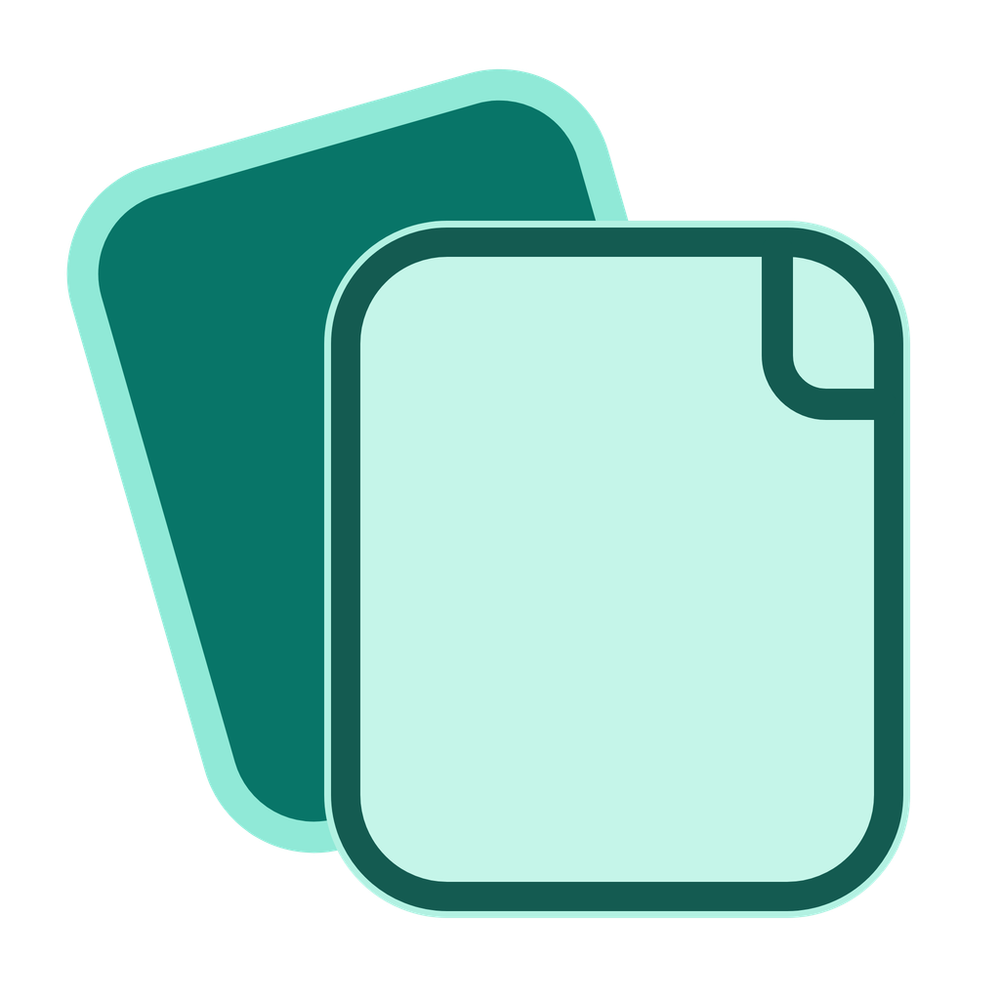

StashBay暂存文件，一键拖出。
Windows 10/11 · Portable & installer · 18 languages
| Name / path | Size | Source branch | Source state |
|---|---|---|---|
| notes.txt | 2.8 KB | — | Unchanged |
| draft.md | 8.4 KB | feature/landing | Modified |
| layout.css | 4.1 KB | feature/landing | Deleted |
| › mockups | 243.2 KB | — | Unchanged |
| copy.md | 6.2 KB | — | Unchanged |
| logo.png | 29 KB | — | Unchanged |